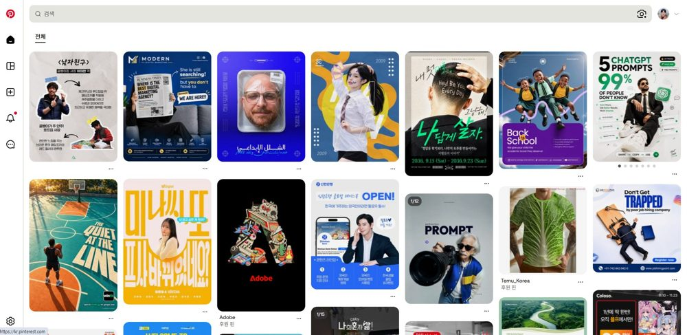
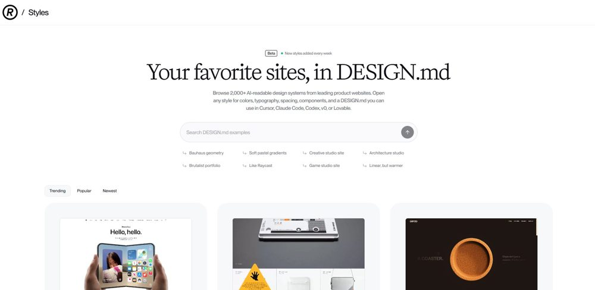
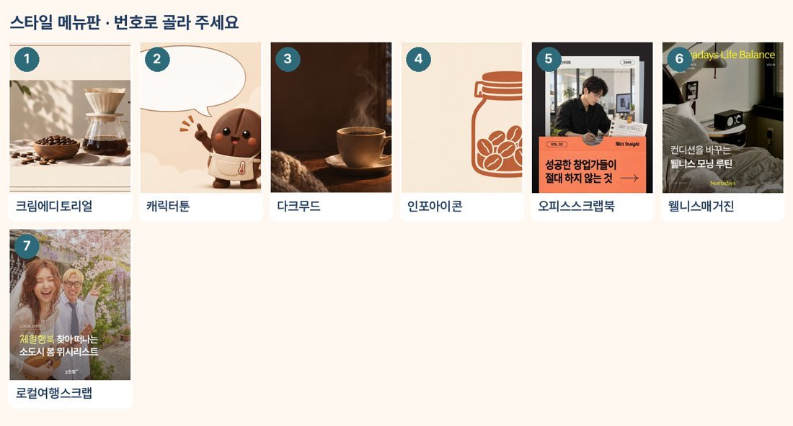

3회차 복습 · 포스터봇 · 카드뉴스봇
같은 포스터를 말로 → 샘플 → MD → 봇으로 만들어 비교하고, 샘플을 따서 봇을 키웠습니다. 수업에서 쓴 (법무부) 종합 콘텐츠 봇을 내려받아 혼자 다시 돌려 보세요.
⏰복습 게임 · 김법무의 칼퇴 대작전퀴즈를 맞혀 업무 8건 처리! 틀리면 퇴근 10분 늦어짐게임 시작 ▶품질은 샘플이, 일관성은 MD가, 편리함은 봇이 만든다
01오늘의 핵심 3가지
- 한 줄로만 요청하면 어떤 포스터가 나올지는 AI가 정합니다.
- 샘플 + MD + KB를 폴더 하나에 넣어 두면 — 그게 봇입니다.
- 포스터는 파일 하나, 카드뉴스는 폴더 하나. 이름은 스타일_번호_특징.
- 대가의 원칙을 숫자로 KB에 심으면 어떤 스타일을 골라도 품질의 바닥이 올라갑니다.
02같은 포스터, 4가지 방법
| 방법 | 내가 할 일 | 결과 | 다시 쓰기 |
|---|---|---|---|
| ① 말로 | 한 줄 입력 | 매번 다름 | ✕ |
| ② 샘플 | 샘플 찾기 + 내용 | 샘플을 따라감 | △ |
| ③ MD | MD 첨부 + 내용 | 규칙대로 일정 | ○ |
| ④ 봇 | “시작” + 번호 | 늘 같은 품질 | ◎ 누구나, 계속 |
공통 주제 : 마을변호사 무료 법률상담의 날 · 11월 27일(목) 14~17시 · ○○구청 1층 민원실 (실습용 가상 정보)
03형용사 풀어 쓰기 — AI는 가치판단을 못 합니다
| 형용사 | 풀어 쓴 지시 (숫자 · 규칙) |
|---|---|
| 세련되게 | 색 3개 이하 · 여백 화면의 40% 이상 · 장식 2개 이하 |
| 신뢰감 있게 | 네이비 바탕 · 흰 글씨 · 왼쪽 정렬 · 기관 로고 오른쪽 아래 |
| 눈에 띄게 | 제목 높이 화면의 15% · 바탕과 명도 대비 7 : 1 이상 |
| 깔끔하게 | 정보 4줄 이하 · 글꼴 2종 이하 · 정렬 한 가지 |
| 따뜻하게 | 크림 · 주황 계열 · 오후 햇살 · 사람 얼굴이 보이는 사진 |
043문제로 확인하기
포스터는 내려받아 이름만, 카드뉴스는 링크만 주면 봇이 전 장을
05핀터레스트에서 따기

pinterest.co.kr → 검색 : 공공 포스터 · 정책 카드뉴스 · campaign poster → 마음에 드는 핀을 누르면 비슷한 핀이 계속 따라 나옵니다.
- 핀 열기 → ⋯ → 이미지 다운로드
- 파일 이름을 특징으로 바꾸기 (폴더 필요 없음)
- 2_포스터봇/샘플/에 넣기
- 예) 스타일_18_네이비정책.png
- 게시물 공유 → 링크 복사
- 카드뉴스봇 채팅에 링크 + 아래 문장
- 챗GPT가 1장 ~ 마지막 장을 캡처해 폴더로
- 예) 스타일_08_인포아이콘/01.jpg ~
카드뉴스봇 채팅에 — 링크로 전 장 따기
이 핀터레스트 게시물 링크를 내부 웹으로 열어서 1장부터 마지막 장까지 전 장을 모두 캡처해줘. 3_카드뉴스봇/샘플/ 안에 '스타일_번호_특징이름' 폴더를 만들어 01.jpg, 02.jpg … 순서로 넣고, 표지는 같은 이름의 .png로도 저장해줘. 특징 이름(2~4단어)과 특징 3줄(색 · 레이아웃 · 글씨 느낌)을 스타일목록.md에 추가하고, 링크는 링크모음.md에 남겨줘. [링크 붙여넣기]
포스터봇 채팅에 — 내려받은 파일 이름 정리
2_포스터봇/샘플/ 폴더에 새로 넣은 포스터 파일을 보고, 특징 이름(2~4단어)을 지어 '스타일_번호_특징이름.png'로 바꿔줘. 스타일목록.md에 색 · 구도 · 글씨 느낌 3줄로 추가하고, 메뉴판을 다시 만들어 보여줘.
로그인 · 보안 때문에 링크가 안 열리면 Win + Shift + S로 캡처해 채팅창에 붙여넣고 “이 스타일도 추가해줘”.
06레페로 스타일즈에서 따기 — 디자인을 MD 한 장으로

styles.refero.design 접속 → 검색Bauhaus geometry · Soft pastel 처럼 느낌으로 찾습니다.
마음에 드는 스타일 열기 → DESIGN.md 복사실제 사이트의 색 · 글꼴 · 간격이 정리된 파일입니다.
봇 채팅에 붙여넣고 포스터 · 카드뉴스용 MD로 바꾸기아래 문장 + DESIGN.md를 함께 붙여넣으세요.
KB/에 스타일MD_이름.md로 저장 → 새 채팅에서 “시작”
아래 DESIGN.md는 웹사이트 디자인 규칙이야. 이걸 포스터 · 카드뉴스에 쓸 '스타일MD_[이름].md'로 바꿔줘. 색(헥스 3개 이하) · 글꼴 느낌 · 여백 · 정렬 · 금지할 것만 숫자로 남기고, 버튼 · 메뉴 같은 웹 요소는 빼줘. 2_포스터봇/KB/에 저장해줘. [DESIGN.md 붙여넣기]
07이름 붙이기 규칙 — 종류_번호_특징
| 나쁜 이름 | 좋은 이름 |
|---|---|
| IMG_2031.jpg | 스타일_18_네이비정책.png |
| 최종_진짜최종.png | 스타일_19_손글씨일러스트.png |
| 캡처(3).png | 스타일_08_인포아이콘/01.jpg |
| 새 문서.md | KB_행사_법률상담의날.md |
사람이 보고 알면, 봇도 보고 압니다. 번호가 곧 메뉴판 순서예요.
폴더 하나에 봇 여러 개 — 기획구성안봇 · 포스터봇 · 카드뉴스봇 (숏폼봇은 다음에 추가)
08폴더 받기
📦(법무부) 종합 콘텐츠 봇 받기ZIP · 41MB · 압축을 풀어 바탕화면에 두세요받기 ↓09봇 만들기 — 프로젝트는 하나, 봇은 번호로
10포스터봇 — 5단계 · 스타일 17종

✅ 세 번만 확인 — 글씨까지 챗GPT 안에서 한 번에 만듭니다. 결과는 2_포스터봇/결과물/에.
11카드뉴스봇 — 6단계 · 스타일 7종

| 장 | 역할 | 문구 (예시 · 말로 한 약속도 계약입니다) |
|---|---|---|
| 1 | 표지 | 계약서 없으면 없던 일? |
| 2 | 본문 | 말로 한 약속도 엄연한 계약입니다 |
| 3 | 본문 | 문자 · 녹음 = 증거, 꼭 남겨 두세요 |
| 4 | 마무리 | 헷갈리면 마을변호사에게 물어보세요 |
왜 1장 시안을 먼저? 4장을 다 만들고 고치면 생성이 네 배로 듭니다.
대가의 말은 멋진 문장 — 봇에게는 숫자로 옮겨 줘야 합니다
12대가의 디자인 원칙 뽑기
| 원칙 | KB에 적는 규칙 (포스터 3:4) |
|---|---|
| 크기 3단계 | 제목은 본문의 4배 · 부제 1.6배 — 제목과 본문 차이 최소 3배 |
| 여백 | 가장자리 = 가로 폭의 8% · 화면의 40% 이상 비우기 |
| 정보량 | 제목 최대 2줄 · 정보 최대 4줄 · 전체 70자 이내 |
| 색 · 대비 | 한 장에 3색 · 본문 대비 4.5 : 1 이상 |
| 정렬 | 기본 왼쪽 · 한 장에 정렬 한 가지 · 로고 오른쪽 아래 폭 18% |
첨부한 자료는 [대가 이름]의 디자인 원칙이야. 포스터 · 카드뉴스에 쓸 규칙만 뽑아 MD 파일로 정리해줘. 원문 문장은 베끼지 말고 쉬운 말로 요약해줘. [정리 항목] 1. 글자 크기 위계 (몇 단계, 몇 배) 2. 여백 · 정렬 (화면 비율 %) 3. 한 장의 정보량 (줄 수 · 글자 수) 4. 색 · 대비 (색 개수, 대비 비율) 5. 생성 후 셀프 점검 5개 [규칙] 형용사 대신 숫자로 쓴다. 파일 이름 : 대가-디자인원칙.md
받은 대가-디자인원칙.md를 2_포스터봇/KB/에 넣고 새 채팅에서 같은 번호로 다시 뽑아 전 · 후를 비교해 보세요. (종합 봇의 공통/KB/KB_디자인원칙.md에 5인의 원칙이 이미 들어 있습니다)
13안 될 때
| 증상 | 이렇게 해 보세요 |
|---|---|
| 봇을 바꾸고 싶음 | 같은 프로젝트에서 새 채팅 → “시작” → 다른 번호 |
| 일반 대화처럼 답함 | 폴더 연결이 끊긴 것 — 소스 폴더 다시 연결 → 새 채팅 |
| 한글이 깨지거나 틀림 | “제목 글자를 KB와 한 글자씩 대조해서 다시 만들어줘” |
| 로고 위치가 매번 다름 | AGENTS.md 맨 아래에 “로고는 오른쪽 아래 폭 18%” 한 줄 추가 |
| 링크가 안 열림 (핀터레스트) | Win + Shift + S 캡처 → 채팅창에 붙여넣기 |
다음 시간 예고
- 종합 콘텐츠 봇에 숏폼봇을 추가해 영상까지 한 폴더에서